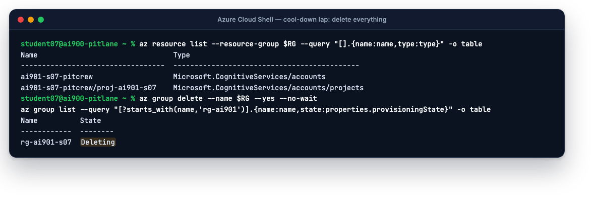

On this page
Velo chats, remembers, cites the warranty guide, hears, speaks, sees, paints and reads paperwork. Legal has its answer about responsibility. The last thing a pit crew does is check the stopwatch and clean the garage.
How the real exam works
- AI-901: Microsoft Azure AI Fundamentals leads to the Microsoft Certified: Azure AI Fundamentals certification. It replaced AI-900, which retired on 30 June 2026. Skills measured are dated 15 April 2026; this course follows them.
- Two domains: Identify AI concepts and capabilities (40–45%) and Implement AI solutions by using Microsoft Foundry (55–60%). Passing score is 700 of 1000; scoring is scaled, not a percentage.
- Fundamentals exams typically run about 45 minutes with roughly 40–60 items: multiple choice, multiple response, drag-and-drop matching, hot-area and short scenario sets. You are expected to recognise Python, REST and CLI, not write them from memory.
- Official preparation: the exam page, the study guide, the free practice assessment on AI Skills Navigator (sign in required) and the Microsoft Learning exercises we mirrored today.
Every scenario hides a workload. Read the last sentence first, name the input and the output, and the service names itself.
- Read the last sentence of the scenario first; it holds the actual question.
- Name the input and the output: that picks the workload, and usually the service.
- Eliminate answers from the wrong layer (a deployment type is never the answer to a responsible-AI question).
- Flag and move on; the clock is the only real opponent.
Practice exam · 40 questions
Answer each question; the explanation appears as soon as you commit. Your answers are saved in this browser, so you can leave and come back. Multiple-response questions say so and have a Check answer button.
0 / 40
no answers yet
Cool-down lap · delete everything
Everything you built today lives in one resource group. Deleting it removes the Foundry resource, its project, every deployment, agent, vector store and analyzer. Nothing you need survives; the scripts and documents are on this site.
export STUDENT=s07; export RG=rg-ai901-$STUDENT
az resource list --resource-group $RG --query "[].{name:name,type:type}" -o table # look before you delete
az group delete --name $RG --yes --no-wait
az group list --query "[?starts_with(name,'rg-ai901')].{name:name,state:properties.provisioningState}" -o table
Foundry resources are soft-deleted for 48 hours, which reserves the name. If you want the name back today (or race control wants a clean subscription), purge it:
az cognitiveservices account list-deleted -o table
az cognitiveservices account purge --name ai901-$STUDENT-pitcrew --resource-group $RG --location eastus2Open portal.azure.com → Resource groups →
rg-ai901-s07.Select Delete resource group on the toolbar, type the resource group name to confirm, and select Delete. Deletion takes a few minutes; the group disappears from the list when done.
Optional: in the Foundry resource's blade you deleted, the Manage deleted resources option (under Azure AI services) lets you purge the soft-deleted name immediately.
Pay-per-use services cost nothing when idle, but a forgotten Provisioned deployment, a running compute instance or an agent in a loop can cost real money overnight.
One resource group per experiment. Delete it when the experiment ends.It is the cheapest habit in cloud computing, and the one most people never form.
What's next
- Book AI-901 within two weeks while it is fresh. Take the official practice assessment first.
- Keep the pit-crew scripts (zip). Each is a 20–40 line starting point for a real Velocity Motors tool.
- Next exam: AI-102 (Azure AI Engineer Associate) goes deep on the same services with full application code. Everything you did today is its foundation.
- Read the study guide once more and check every bullet against a lap on this site. If one feels thin, that lap's quiz is the fastest fix.
Pit wall debrief · what you learned
In one day, in one shared subscription, you:
- Set up a Foundry resource, project and model deployment, and learned what deployment types and TPM quotas mean (Lap 0).
- Named the six responsible-AI principles with real dilemmas, explained tokens, attention, temperature and grounding, chose models by capability, and ran Content Safety (Lap 1).
- Shaped a model with a system prompt, saw temperature and grounding change its answers, got JSON back, and ran a Foundry SDK chat client (Lap 2).
- Built, tested and published an agent with file search and a code interpreter, and called it with
agent_reference(Lap 3). - Analysed reviews and tickets with Azure AI Language, made the car speak with SSML, transcribed speech, switched on Voice mode, and answered a spoken question with gpt-audio-mini (Lap 4).
- Read photos with Azure AI Vision and a multimodal model, and generated concept-car images with FLUX (Lap 5).
- Turned an invoice, a window sticker, lot photos, a narration and a video into typed fields with Content Understanding (Lap 6).
- Scored a practice exam and deleted your garage (Lap 7).
Thank you for driving. Back to the start →